Pipeline de Sofwtare
“The automated manifestation of your process for getting software from version control into the hands of your users.” -- Jez Humble
Conceptos
Cíclo de vida Software
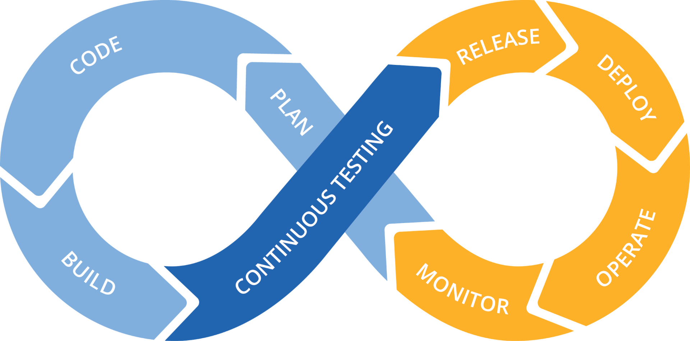Ambientes
- Fijos y efímeros
- Fáciles de crear
- Diferentes Propósito
- Probar tecnologías
- Pruebas de Seguridad
- Auditorías
- Procedimientos de Acceso
Integración Continua
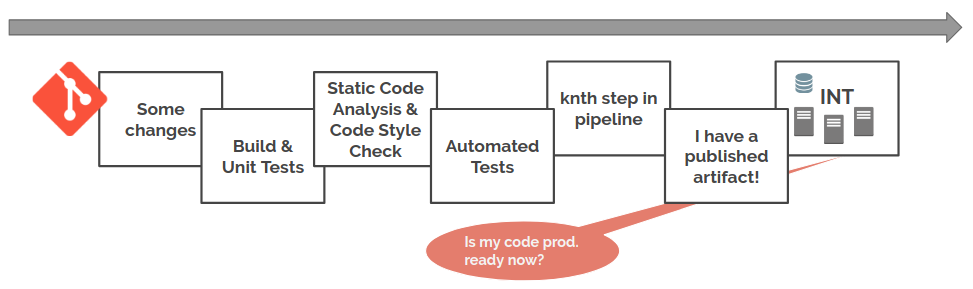
Desplegar vs. Entregar
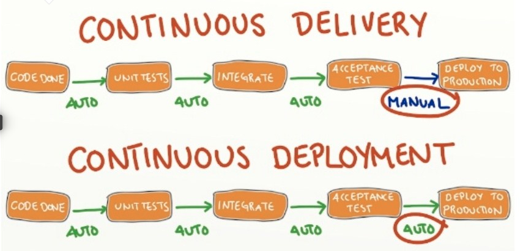
Minimo producto viable
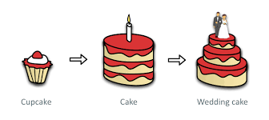Pipelines
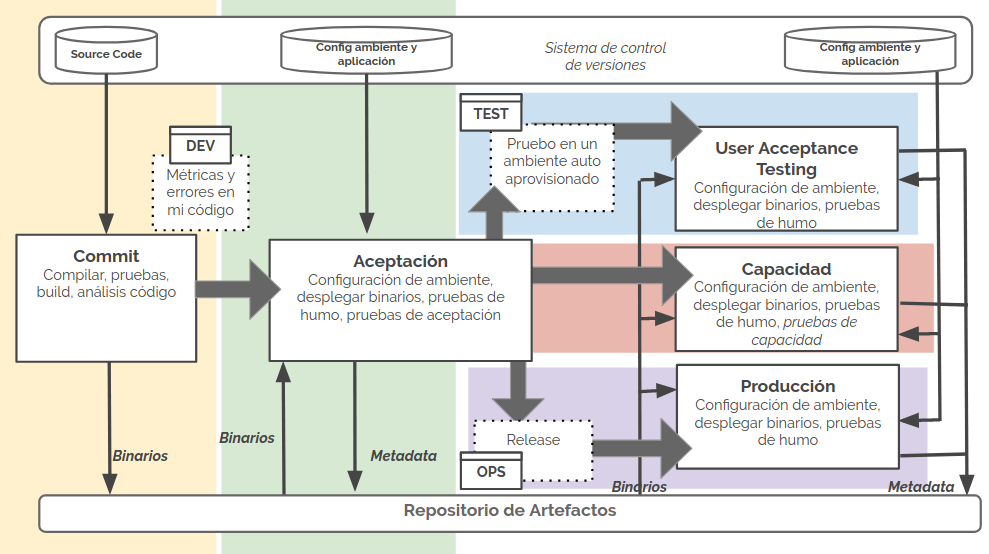
Componentes Pipeline
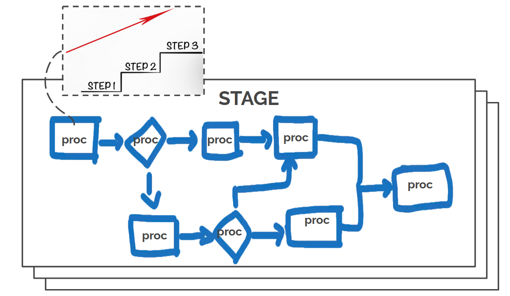
Etapas Principales
- Desarrollo
- Integración
- QA
- Producción
Stage de Desarrollo
- Procedimiento Individual de cada Desarrollador
- Pulls contínuos
- Pushes contínuos
- Pull Requests
- Branches
Stage de Integración
- Administración de Código Fuente
- Pruebas
- Análisis de Código Estático
- Análisis de Seguridad de Dependencias
- Construcción de Binarios
- Preparación de Datos
- Creación y Configuración de Infraestructura
- Despliegue
Stage de QA
- Pruebas de Aceptación
- Pruebas de Carga y Estrés
- Pruebas seguridad
Stage de Producción
- Monitoreo
- Negocio
- Aplicación
- Infraestructura
- Operación
Desarrollo
Desarrollo
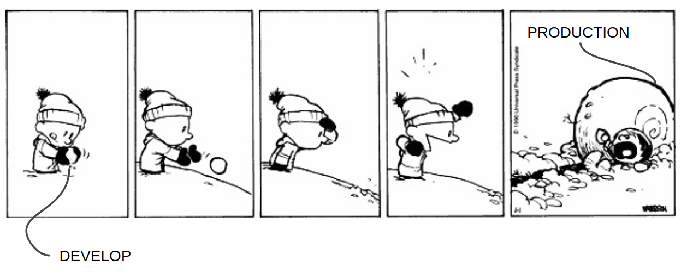Procedimiento Individual de cada Desarrollador
- "Pero funciona en mi máquina"
- Pruebas unitarias: elaboración y ejecución
- Análisis código estático
Pull y Push Contínuos
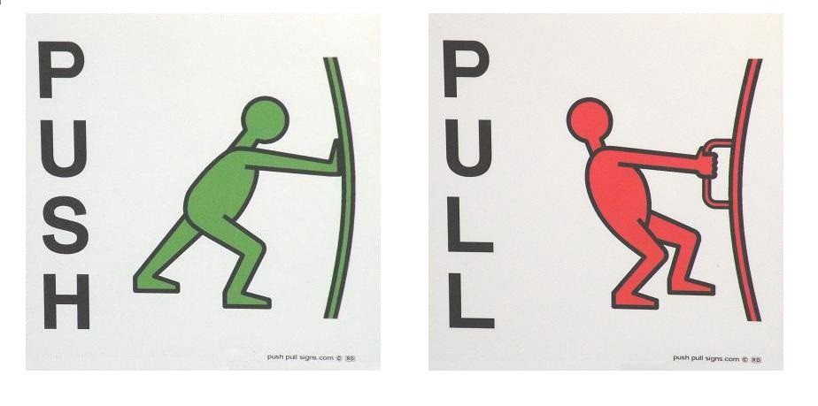Seguridad
Pull Request
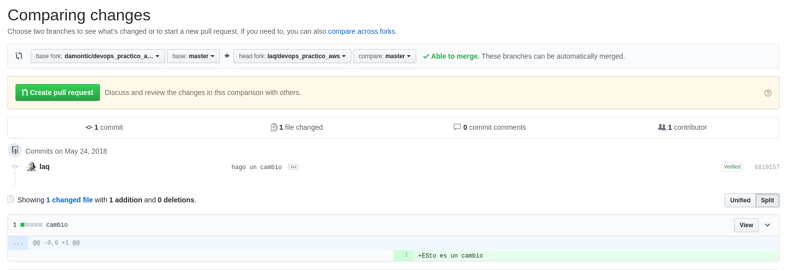Branches
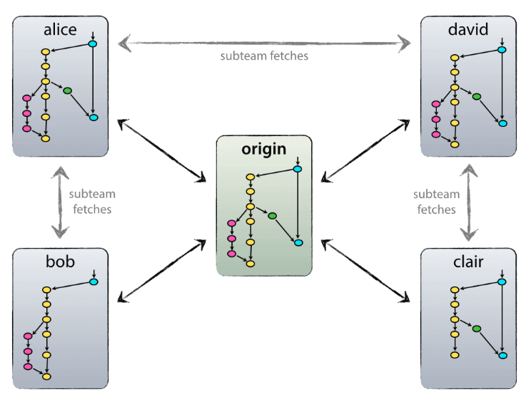Pensar en cómo monitorear a futuro
Integración
Administración de Código Fuente

Pruebas
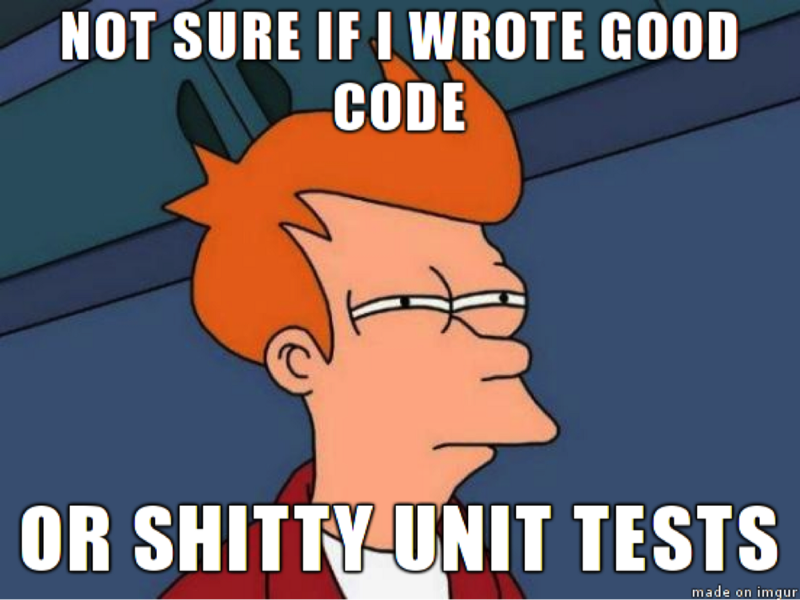Análisis de Código Estático
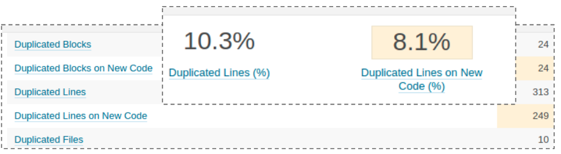 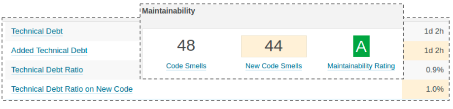Análisis de Seguridad de Dependencias
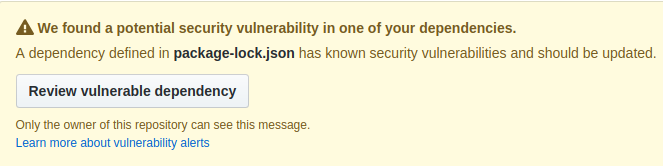Construcción de Binarios
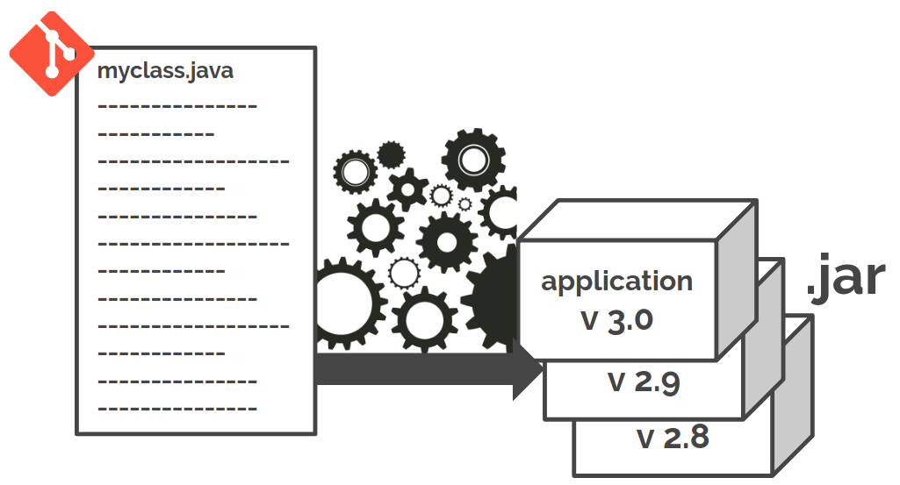Preparación de Datos

Creación y Configuración de Infraestructura
 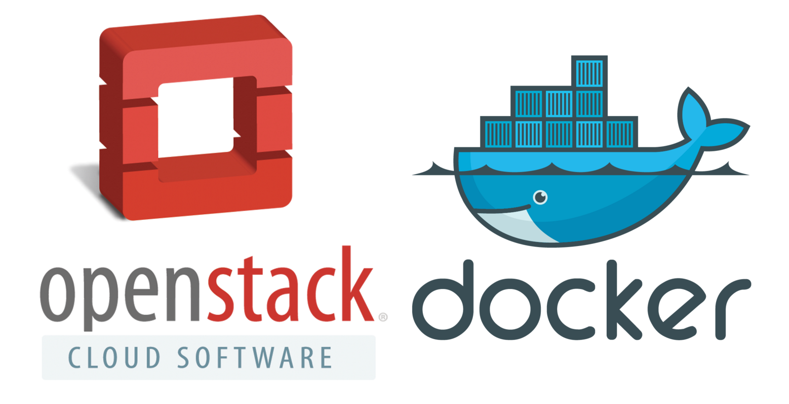
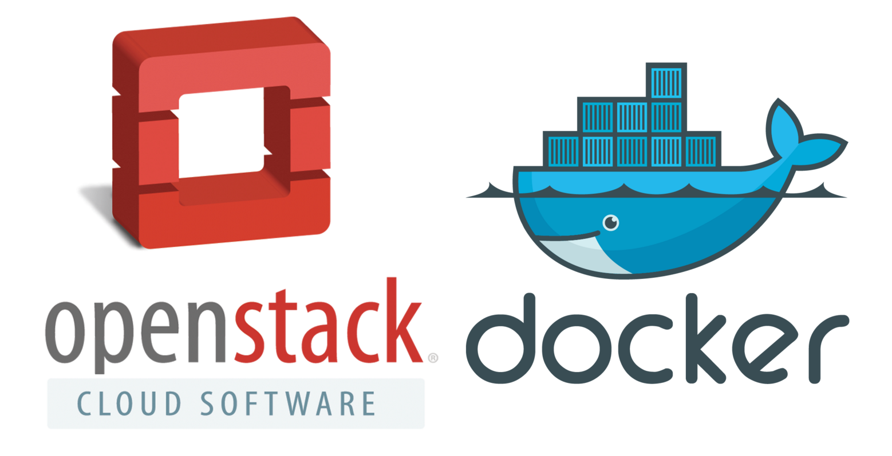
Despliegue
QA
¿Qué suele pasar?

Pirámide invertida
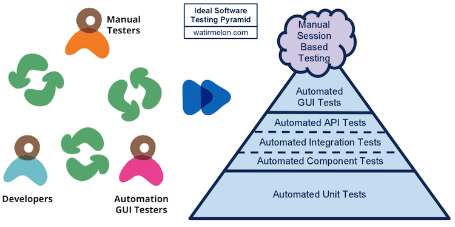Pruebas de Aceptación
Pruebas de Carga y Estrés
Pruebas seguridad